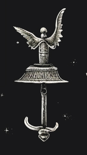

Long ago, the world was united under the banner of the Maranthi Imperium, a colossal realm ruled by a god-king who claimed dominion over both the earth and the heavens. For centuries, the empire thrived, its cities towering over the wildlands, its armies unmatched, and its people basking in prosperity. But power breeds decadence, and as the ruling caste descended into madness, the empire became a breeding ground for heresy and corruption.
Whispers of forbidden gods and ancient rites spread like a plague across the empire. Once-loyal subjects turned to occult practices, seeking salvation from powers older than the empire itself. Cults arose, worshipping forgotten deities — gods of blood, shadow, and decay. The god-king's divine rule was challenged as his own priests abandoned him, replacing his light with dark invocations. Soon, the empire fractured, unable to contain the growing heretical uprisings.
Civil war erupted. The mighty empire crumbled under the weight of fanaticism, betrayal, and unholy magic. The land was left scarred, and the ruins of once-great cities now stand as silent monuments to a lost age of grandeur. In the empire’s ashes, chaos reigns.
Now, the world is a brutal landscape. The once-centralized rule of the empire has splintered into countless Sectums and Dominiums.
Dominium lords, known as Ruinarii, lead their houses in constant battles for territory, resources, and power. Their warbands, made up of desperate slave militia, mercenaries, and twisted beings, clash in the wilderness and the ruins, seeking to carve out a scrap of the long fallen empire.
Sectums devoted to dark, forgotten gods spread across the land like wildfire. Each preaching a different path to salvation, often through sacrifice, blood rituals, or communion with ancient beings. At the heart of it all are the Princeps, leaders of the most powerful cults. They plot in the shadows, waiting for their moment to rise, to usher in an age where their dark gods will once again rule the earth.
There is no unity, only survival. The strong prey on the weak, and alliances are fleeting, broken as soon as they are made. Those with power use it ruthlessly, while others turn to dark bargains with eldritch forces, hoping to gain some edge in the endless struggle.
In Maledictus, nothing is sacred. Morality has given way to pragmatism, and even the purest hearts are curse-tainted. It is a world where life is fleeting, where hope has long been abandoned, and where power comes only to the blooded and the mad.
